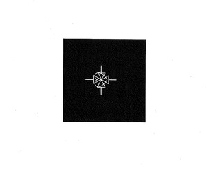

Trade Mark Journal No.2025/048 28 November 2025
UK00004288444 3 November 2025 (25,41)

- Class 25
- Clothing Clothes Headbands [clothing] Headbands for clothing Jackets [clothing] Aprons [clothing] Ready-to-wear clothing Parts of clothing, footwear and headgear Gloves [clothing].Gloves as clothing Jackets (Stuff-) [clothing] Stuff jackets [clothing] Furs [clothing] Belts [clothing] Belts for clothing Drawers [clothing] Drawers as clothing Knitwear [clothing] Capes (clothing) Collars [clothing] Layettes [clothing] Clothing layettes Jerseys [clothing] Hoods [clothing] Kerchiefs [clothing] Denims [clothing] Visors [clothing] Garments for protecting clothing Playsuits [clothing] Linen clothing Paper hats for use as clothing items Shorts [clothing] Muffs [clothing] Veils [clothing] Leather clothing Clothing of leather Leather (Clothing of-) Oilskins [clothing] Jackets being sports clothing Gabardines [clothing] Woolen clothing Trunks being clothing Gussets for underwear [parts of clothing] Maternity clothing Clothing for leisure wear Fabric belts [clothing] Tops [clothing] Embroidered clothing Cowls [clothing] Bottoms [clothing] Corsets [clothing, foundation garments] Cashmere clothing Clothes for sports Waterproof clothing Pockets for clothing Wristbands [clothing] Boas [clothing] Clothing for babies Braces for clothing Party hats [clothing] Bodies [clothing] Ready-made clothing Rainproof clothing Combinations [clothing] Mufflers [clothing] Silk clothing Knitted clothing Bandeaux [clothing] Foulards [clothing articles] Casual clothing Quilted jackets [clothing] Hats (Paper-) [clothing] Paper hats [clothing] Weatherproof clothing Gussets for bathing suits [parts of clothing].
- Class 41
- Music concerts Recording of music Music recording Music publishing and music recording services Music performances Jazz music entertainment services Production of music concerts Music education Presentation of music concerts. Live music concerts Performance of music Pop music concerts (Organisation of-) Production of music Music production Music concert services Teaching of music Music publishing Publishing of music Performance of music and singing Tuition in music Organisation of music concerts Production of sound and music recordings Music festival services Music instruction Instruction in music Performing of music and singing Performance of dance, music and drama Live music performances Music entertainment services Publication of music Arranging of music performances Music composition services Direction of music performances Organising of festivals relating to jazz music Composition of music for others Music composition for others Music recording studio services Live music services Rental of phonographic and music recordings Music mixing services Production of music shows Live music shows Artistic management of music venues Arranging of music shows Music cassettes (Rental of-) Tuition in music appreciation Music library services Music group services Music performance services Music production services Publication of sheet music Music publishing services Provision of live music Music transcription for others Musical concerts by radio Musical entertainment Arranging and conducting of music concerts Music competition services Live musical concerts Publication of music books Providing digital music from the internet Music transcription services Entertainment in the nature of live performances by musical bands Presentation of musical concerts Musical concerts by television Education and training in the field of music and entertainment Selection and compilation of pre-recorded music for broadcasting by others Sound recording and video entertainment services Entertainment in the form of recorded music (Services providing-) Musical concert services Arranging of musical entertainment Entertainment in the nature of dance performances Production of musical recordings Entertainment in the nature of live dance performances organization of exhibitions for cultural or educational purposes, arranging and conducting of conferences, congresses and symposiums; translation and language interpretation services; publication of books and texts, other than publicity texts; news reporters services, photographic reporting; photography; film direction and production services, other than for advertising films; cultural, educational or entertainment services provided by amusement parks, circuses, zoos, art galleries and museums; sports and fitness training services; training of animals; online gaming services; gambling services, organization of lotteries; ticket reservation and booking services for entertainment, educational and sporting events; certain writing services, for example, screenplay writing, songwriting. Art exhibitions Art gallery services Gallery services (Art-) Art exhibition services Mural art painting services School services for the teaching of art Education academy services for teaching art history Beauty arts instruction Cultural, educational or entertainment services provided by art galleries Instruction in martial arts Martial arts instruction Conducting workshops and seminars in art appreciation Conducting of workshops and seminars in art appreciation Instruction in the field of the visual arts.
De'jhan Jeremiah McKay-Miller- Freeman